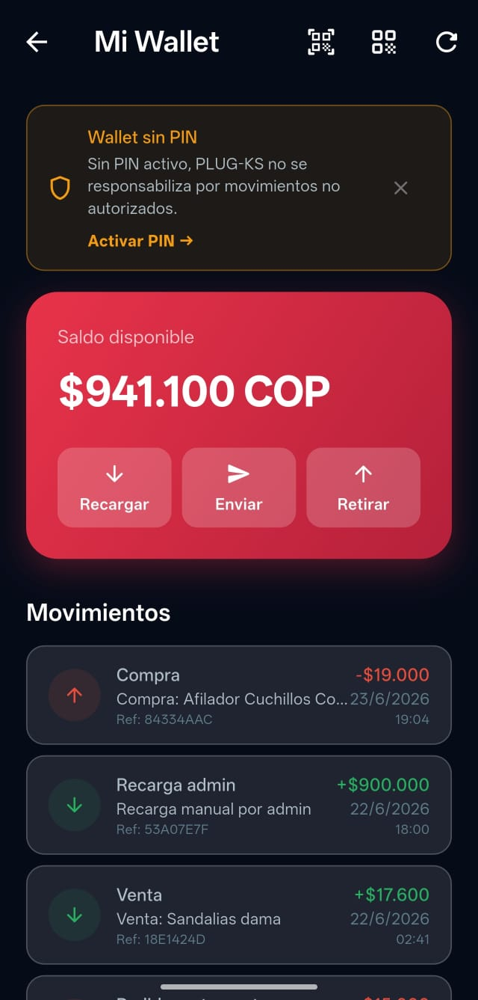

Tu Wallet de PLUG-KS acumula saldo automáticamente con cada compra que realizas. ¡Es dinero que vuelve a ti!

Saldo disponible, recargar, enviar y retirar desde tu Wallet
¿Qué es el Cashback?
El cashback es un porcentaje del valor de tu compra que se acredita automáticamente en tu Wallet. Por ejemplo, si compras un artículo de $50.000 y el cashback es del 2%, recibes $1.000 en tu Wallet.
¿Cómo ver mi saldo Wallet?
1
Ve a la sección "Donaciones"
Toca el ícono de corazón en la barra de navegación inferior.
2
Tu saldo aparece en la parte superior
Verás tu saldo disponible y el historial de movimientos: cashback recibido, bonos y saldo usado.
¿Cómo usar el saldo Wallet al comprar?
1
Ve al checkout de tu compra
Agrega el artículo al carrito y toca "Ir a pagar".
2
Selecciona "Pagar con Wallet"
Si tienes saldo suficiente, puedes pagar todo con Wallet. Si no alcanza, el resto se paga con Wompi.
💡 Tip: Acumula cashback en cada compra y úsalo para obtener descuentos en futuras compras. ¡Entre más compras, más ahorras!
Bonos adicionales
También puedes recibir saldo en tu Wallet por:
- Invitar amigos con tu código de referido
- Ganar torneos mensuales
- Promociones especiales del equipo PLUG-KS